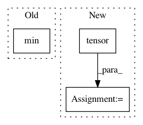

44d2847610944f56a06b7cfa54faadb66e130a83,allennlp/training/metrics/categorical_accuracy.py,CategoricalAccuracy,__call__,#CategoricalAccuracy#Any#Any#Any#,31
Before Change
if self._top_k == 1:
top_k = predictions.max(-1)[1].unsqueeze(-1)
else:
top_k = predictions.topk(min(self._top_k, predictions.shape[-1]), -1)[1]
// This is of shape (batch_size, ..., top_k).
correct = top_k.eq(gold_labels.unsqueeze(-1)).float()
After Change
if is_distributed():
_correct_count = torch.tensor(self.correct_count).to(device)
_total_count = torch.tensor(self.total_count).to(device)
dist.all_reduce(_correct_count, op=dist.ReduceOp.SUM)
dist.all_reduce(_total_count, op=dist.ReduceOp.SUM)
self.correct_count = _correct_count.item()
self.total_count = _total_count.item()
In pattern: SUPERPATTERN
Frequency: 3
Non-data size: 3
Instances
Project Name: allenai/allennlp
Commit Name: 44d2847610944f56a06b7cfa54faadb66e130a83
Time: 2020-08-12
Author: akshita23bhagia@gmail.com
File Name: allennlp/training/metrics/categorical_accuracy.py
Class Name: CategoricalAccuracy
Method Name: __call__
Project Name: rusty1s/pytorch_geometric
Commit Name: 631d4ee2ece28da70d6e22201129f39b4f1dc586
Time: 2020-10-26
Author: matthias.fey@tu-dortmund.de
File Name: torch_geometric/data/temporal.py
Class Name: TemporalData
Method Name: __getitem__
Project Name: stanfordnlp/stanza
Commit Name: db7b74579181f9cbae3583f447d83148714a1c3d
Time: 2020-06-15
Author: horatio@gmail.com
File Name: stanza/models/classifiers/cnn_classifier.py
Class Name: CNNClassifier
Method Name: forward